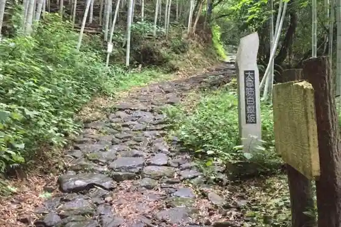
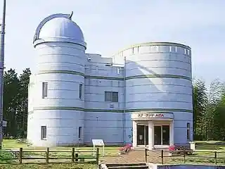
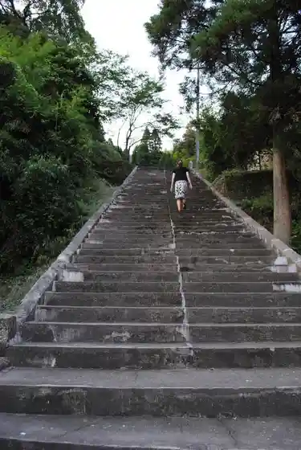
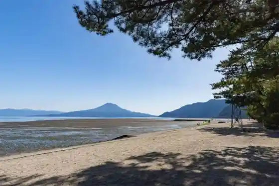

Rekishi Kokudo Hakugin Saka
Aira, Kagoshima · 0995-65-1553 · Official / source link

Suta Land AIRA
Aira, Kagoshima · 0995-68-0688 · Official / source link

Yamada no Gaisenmon
Aira, Kagoshima · 0995-65-1553 · Official / source link

Shigetomi Coast Beach
Aira, Kagoshima · 0995-66-3145 · Official / source link

Saezuri Forest (Campground) Takakura Lookout
Aira, Kagoshima · 0995-62-6666 · Official / source link
Ryumon Taki
Aira, Kagoshima · 0995-67-6052 · Official / source link
Ryumon Tsukasa Saka
Aira, Kagoshima · 0995-67-6052 · Official / source link
Muku Hatoju Bungaku Memorial Museum
Aira, Kagoshima · 0995-62-4800 · Official / source link
Takaoka Park
Aira, Kagoshima · 0995-66-3111 · Official / source link
Nippon'ichi no Kyoju Gamo no Dai Kusu
Aira, Kagoshima · 0995-52-8400 · Official / source link
Sumiyoshi Ike Koen Kyanpu Village
Aira, Kagoshima · 0995-66-3145 · Official / source link
Gamo Hachiman Shrine
Aira, Kagoshima · 0995-52-8400 · Official / source link
Ryugashiro Magai Bonji
Aira, Kagoshima · 0995-62-2111 · Official / source link
Washi Gyararii
Aira, Kagoshima · 0995-52-8993 · Official / source link
Ishigura Museum Shirogane Shuzo
Aira, Kagoshima · 0995-67-1496 · Official / source link
Minamiura Fumiyuki Haka
Aira, Kagoshima · 0995-62-2111 · Official / source link
Sei Hoko Shrine
Aira, Kagoshima · 0995-62-5716 · Official / source link
Nagisa Koen Aira
Aira, Kagoshima · Official / source link
Gamo Kantorii Club
Aira, Kagoshima · 0995-52-0381 · Official / source link
Kako Shima Taka Maki Kantorii Club
Aira, Kagoshima · 0995-52-1603 · Official / source link
Fontana no Oka Kamo
Aira, Kagoshima · 0995-52-1218 · Official / source link
Shigetomi Kaigan Shizen Fureai Kan Nagisa Museum
Aira, Kagoshima · 0995-73-3146 · Official / source link
Ryumon Togei Kenko Village to Yume Land
Aira, Kagoshima · 0995-62-1000 · Official / source link
Gamo O Kariya Mon
Aira, Kagoshima · 0995-62-2111 · Official / source link
O Kariya Inu Maki
Aira, Kagoshima · 0995-62-2111 · Official / source link
Gamo Castle Ruins
Aira, Kagoshima · 0995-67-6052 · Official / source link
Kakehashi Saka
Aira, Kagoshima · 0995-62-2111 · Official / source link
Ryumon Taki Onsen
Aira, Kagoshima · 0995-62-2488 · Official / source link
Kafe Rabyu
Aira, Kagoshima · 080-2772-5644 · Official / source link
Senmon Gaido no Kaisetsu Tsuki ! Kinko Wan no Higata no Ikimono Kansatsu Tour
Aira, Kagoshima · 0995-67-6042 · Official / source link
Gamo Saro zenzai
Aira, Kagoshima · 0995-52-1164 · Official / source link
Gamo Fumoto
Aira, Kagoshima · 0995-66-3145 · Official / source link
Sakura Shima Service Area (Nobori) Dogguran
Aira, Kagoshima · 0995-66-5180 · Official / source link
Hiki Yamakawa Soi Na no Hana Rodo
Aira, Kagoshima · Official / source link